x-prediction：让网络预测干净图像
网络究竟应该预测什么
前面的文章里，我们已经见过几种从噪声生成图像的方法。DDPM 通常让网络预测加入的噪声；Score Matching 学习带噪分布的 score，也就是对数概率密度的梯度；Flow Matching 则通常让网络直接预测把当前状态推向数据分布的速度。
这些方法已经回答了“怎样构造可学习的分布变化路径”和“怎样沿路径生成图像”。不过，还有一个选择值得重新考虑：为了完成生成，神经网络本身究竟应该直接输出什么？
既然最终想得到干净图像，能不能让网络直接预测干净图像，再利用已知公式，算出采样需要的噪声、score 或速度？这种选择就叫作 x-prediction，这里的 x 指干净数据。它并不是 JiT 首次提出的概念；JiT 的意义在于，通过分析和实验，重新凸显了这个选择在像素空间生成中的重要性。#Li-He-2025-JiT
读到这里，可能会觉得：前面不是已经说过，干净图像、噪声和速度可以相互换算吗？既然它们描述的是同一条路径，直接预测哪一个，不应该都一样吗？
可以通过公式换算，不代表同一个有限容量的网络，学习它们时会遇到相同的困难。 这就是本篇要解释的问题。尤其在直接处理较大图像 patch 时，一个隐藏状态需要承载更多像素的信息，预测目标的选择可能显著影响模型能否学好。
为什么大 patch 让这个选择更重要
JiT 尤其关注普通扩散 Transformer（DiT）直接在像素空间生成图像时的情况。DiT 把图像切成 patch，每个 patch 编码成一个 token。一个 16×16 的 RGB patch 包含 16×16×3=768 个数值；如果 patch 变大，一个 token 对应的像素和噪声变化就会更多，而隐藏状态的宽度不一定同步增加。
在原论文的 ImageNet 256×256、JiT-B/16 实验中，每个 patch 的维数和主干隐藏宽度均为 768。直接预测干净图像时，模型能学到合理的生成结果；直接预测噪声或速度时，则在该设置中严重失败。原文 Table 2 还分别更换了计算损失的空间，因此这个现象并不能简单归结为“只要换个损失就行”。#Li-He-2025-JiT
所以，本篇特别关心的是：当普通 DiT 用一个有限宽度的状态处理较大的像素块时，为什么直接预测干净结构会更有意义？ 这与低分辨率、小 patch 或不同架构上的比较不是同一个问题。论文的小 patch 实验中，几种目标的结果接近；但其分辨率等设置也不同，不能把这两组结果当成只改变 patch size 的严格单变量实验。
JiT 将优势归因于自然图像的低维结构：干净预测可以利用这种结构，而含噪目标要求网络重现更高维的噪声变化。Liang Tongtong 在博客开头指出，这个解释留下了两个需要具体化的概念：网络可利用的“低维性”到底是什么？为预测噪声而占用的“容量”又是什么？#Liang-Blog 后面的螺旋实验提供直观证据，残差流分析则帮助我们继续追问机制。
先看一个螺旋实验
Li 与 He 在 JiT 原论文中，先做了一个容易观察的玩具实验。他们生成一组二维螺旋点云，再通过固定的随机线性变换，将它嵌入更高维的空间。我们仍能把它投影回平面，看见熟悉的螺旋；但对模型来说，输入和输出已经是 D 维向量，而且模型并不知道这个嵌入变换。#Li-He-2025-JiT
可以把它想成：原本只需两个坐标就能描述的一组数据，被藏进了更多坐标之中。干净数据仍具有低维结构，而独立高斯噪声会沿高维空间的各个方向产生变化。
论文分别在 D=2、8、16、512 的设置中，使用五层、隐藏宽度为 256 的 ReLU 多层感知机，对比三种直接输出：干净数据 x、噪声 ε 和速度。三种方法统一使用速度空间的平方误差损失，以观察直接输出的选择如何影响学习。输出图像时如何计算速度损失，下一章再推导。
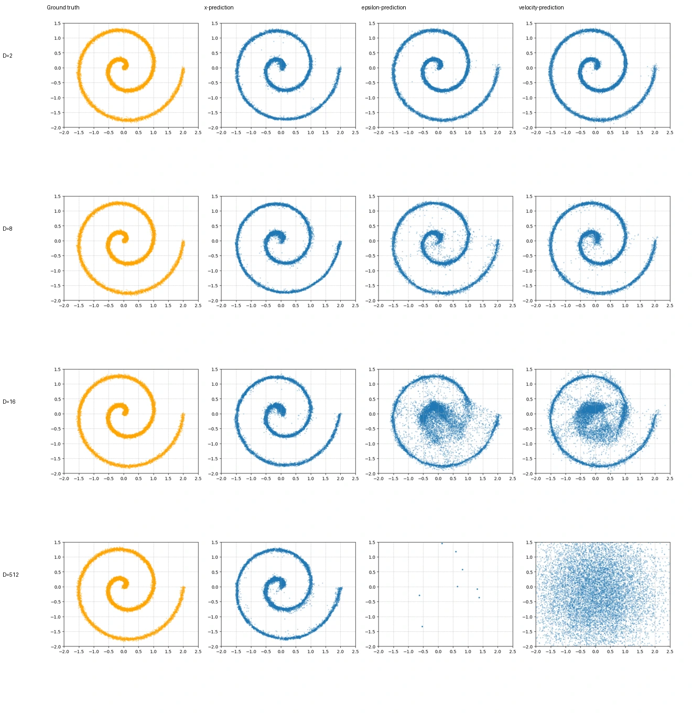
读这张图时，重点看从上到下的变化：在低维设置中，几种输出都能学出螺旋；随着观测维数增加，噪声和速度输出逐渐难以恢复结构。在 D=512、隐藏宽度只有 256 时，x-prediction 仍能生成合理的螺旋，而另外两种输出在该实验中明显失败。
这不是因为 x-prediction 的网络更宽，也不是因为它单独采用了更有利的损失空间。这个对照提示我们：即使采样需要的量可以换算，要求主网络直接实现哪个函数，仍然会影响学习结果。 当然，玩具实验只提供了特定模型和数据设置下的证据，还不能由此推出所有生成模型都应该采用 x-prediction。
为什么预测干净结构可能更省力
JiT 用流形假设解释这个现象：干净数据具有低维结构，而噪声及包含噪声的速度目标，在更广泛的方向上变化。让受限的网络直接输出干净结构，可能比要求它同时重现高维噪声相关变化更容易。
不过，“数据低维，所以需要更少容量”还不够具体。低维指什么？容量又指参数量、计算量，还是隐藏状态能携带的信息？Liang Tongtong 在知乎回答和博客中，进一步从残差流负担的角度解释了这个问题。#Liang-Zhihu#Liang-Blog
Transformer 的每层都会更新一组隐藏状态，这组状态通过残差连接一路传递，同时供后续层继续计算。这条沿深度传递信息的通路，可以称作残差流。如果最终要直接读出含有噪声相关变化的速度，那么网络中间就必须保留足够的信息，让最终输出仍能区分这些变化。
直接预测干净结构时，网络可以有更大的自由过滤噪声相关变化；采样所需的速度，随后利用网络的干净估计和当前输入，通过解析公式得到。因此，一部分对带噪输入的依赖可以留在网络外完成，而不必全部通过主干的隐藏状态传到最后。
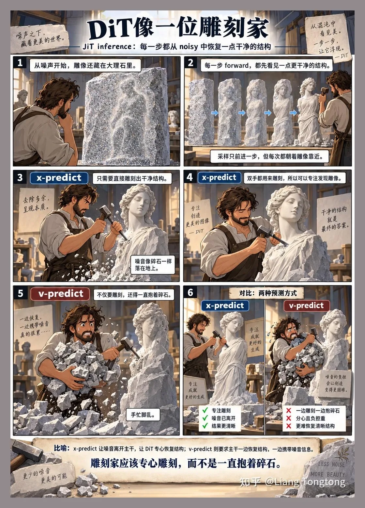
这个比喻里，雕像对应干净结构，碎石对应噪声相关的信息。雕刻家不仅要把雕像刻出来，还被要求一直抱着碎石，就会更受手上空间的限制。对应到网络，我们关心的是：有限的隐藏状态里，有多少空间用于保存最终读出所需的噪声变化，又有多少空间可供后续层学习有用结构。
这里说的“保留噪声”，不是保存从起点到当前时刻的完整加噪历史。它指的是，为了得到当前输入对应的预测目标，内部表示必须保留哪些输入变化。x-prediction 也仍然接收带噪数据，沿生成路径多步采样；它不会因为输出目标改成图像，就自动变成一次前向计算直接出图。
本篇要回答什么
这样，问题就从“哪一个目标在公式上更正确”，变成了“哪一种输出与网络的信息处理方式更匹配”。梁彤彤的进一步实验也说明，这件事不能只靠流形假设解释：patch 的方差如何分布、噪声能否经过独立通路、残差流有多宽，都会影响结果。#Liang-Blog
接下来，我们先把干净图像、噪声和速度的换算推导清楚，区分网络输出什么、损失比较什么、采样使用什么；再回到 JiT 的架构和实验，解释为什么可换算的目标仍会产生不同的学习负担。随后借助其他像素生成架构和梁彤彤的分析，检验这个解释的适用范围。
本篇需要回答的核心问题是：怎样让网络把有限的信息承载能力更多地用于学习干净结构，同时仍然得到生成过程需要的速度？
第一章提出了一个疑问：图像、噪声和速度可以换算，为什么直接输出哪一个仍然重要？在分析网络容量之前，我们先明确：这个“换算”具体怎样进行，又有哪些东西没有随着输出目标一起改变。
先固定同一条路径
设干净数据为 \(x\)，独立高斯噪声为 \(\epsilon\sim\mathcal N(0,I)\)。沿用 JiT 的时间方向：\(t=0\) 是噪声端，\(t=1\) 是数据端。二者的线性插值为
固定一对 \((x,\epsilon)\)，对时间求导，得到这条条件路径的速度：
这里用 \(u\) 表示速度；JiT 原文使用 \(v\)，但它与 VP 扩散中常写作 \(v=\alpha_t\epsilon-\sigma_t x\) 的参数化不是同一个定义。比较公式前必须先看各自的路径与时间约定。
训练时，我们自己取出图像、采样噪声，因此知道这个样本对的速度标签。推理时则只有当前状态和时间。平方损失下，理想模型学习的是条件均值 \(\mathbb E[u\mid z_t,t]\)，而不是识别每个状态唯一对应的原始样本对。
让网络直接输出图像
令主网络直接输出干净图像估计：
我们希望从它得到与同一个当前状态相容的噪声估计。把预测量代入路径约束：
移项得到
再利用速度定义，有
网络只直接输出了一个图像估计，噪声与速度都在网络外通过公式计算。 这些是按定义构造的估计量，并不意味着任意网络输出都准确，也不意味着我们找回了实际采样的那份噪声。
三种直接输出怎样换算
如果网络直接输出噪声，就先从路径约束解出干净图像；如果直接输出速度，就联立 \(z_t=t\hat x+(1-t)\hat\epsilon\) 与 \(\hat u=\hat x-\hat\epsilon\)。整理后得到：
| 主网络直接输出 | 干净图像估计 | 噪声估计 | 速度估计 |
|---|---|---|---|
| \(\hat x\) | \(\hat x\) | \((z_t-t\hat x)/(1-t)\) | \((\hat x-z_t)/(1-t)\) |
| \(\hat\epsilon\) | \((z_t-(1-t)\hat\epsilon)/t\) | \(\hat\epsilon\) | \((z_t-\hat\epsilon)/t\) |
| \(\hat u\) | \(z_t+(1-t)\hat u\) | \(z_t-t\hat u\) | \(\hat u\) |
例如，速度输出对应的第一条换算，可以直接由 \(\hat\epsilon=\hat x-\hat u\) 代入路径得到：
于是 \(\hat x=z_t+(1-t)\hat u\)，再代回便得噪声估计。
含除法的关系要在相应分母非零时使用。尤其是图像输出换速度的公式不能在 \(t=1\) 直接计算；噪声输出换图像则不能在 \(t=0\) 直接计算。实际训练与采样需要处理端点，不能因理论上可换算就忽略数值问题。
预测图像，也能计算速度损失
网络直接输出什么，与用什么误差训练它，是两个选择。JiT 的最终方案让网络直接输出 \(\hat x\)，转换出 \(\hat u\)，然后优化速度平方误差：#Li-He-2025-JiT
训练目标也能写成 \(u=(x-z_t)/(1-t)\)，因此
从而
这说明：直接预测图像、计算速度损失，等价于对图像误差施加特定的时间权重；它不等价于直接使用无权重的图像损失。期望中时间的采样分布也会影响整体训练权重。
可以做一个标量检查：取 \(t=1/2\)、\(x=2\)、\(\epsilon=0\)，则 \(z_t=1\)、\(u=2\)。假设网络预测 \(\hat x=1.5\)，换算后 \(\hat u=1\)。速度平方误差为 \(1\)，而图像平方误差为 \(0.25\)；乘上 \((1-t)^{-2}=4\)，恰好得到相同结果。
上述等式使用未截断的分母。若实现为避免端点不稳定而截断分母，必须根据实际代码重新说明损失权重，不能把理想等式直接搬过去。
平方损失究竟让模型学到什么
还需要澄清“预测噪声”这句话：标签虽然是我们实际采样的那份噪声，模型却未必能从带噪输入唯一确定它。同一个当前状态，可能由不同的干净数据与噪声组合产生。
令 \(Y\) 表示图像、噪声或速度标签，\(m(z_t,t)=\mathbb E[Y\mid z_t,t]\)。在固定当前状态与时间的条件下，把任意预测 \(f\) 的误差展开：
交叉项之所以消失，是因为 \(\mathbb E[Y-m\mid z_t,t]=0\)。第二项不依赖预测函数，因此理想的平方损失最优解是条件均值，而不是逐样本识别原始来源。
把这个结论用于三种标签，记最优图像估计为 \(x^*=\mathbb E[x\mid z_t,t]\)，便有
这是利用条件期望的线性性得到的：在给定 \(z_t,t\) 后，它们可以视为已知量。这说明三种理想预测函数仍然相互对应。它没有保证固定宽度、固定计算图的网络能同样容易地实现它们。#Liang-et-al.-2026
换损失，会怎样改变训练
从图像输出构造噪声估计时，也可以直接相减：
因此，对同一组相互换算的预测量，有
这三种无额外权重的损失，一般不是同一个训练目标。若直接更换损失而不补偿权重，就改变了模型对不同时间段误差的重视程度。在这里的时间方向下，速度损失对接近干净端的图像误差赋予更大权重；采样时间的分布又会进一步改变各时刻在训练中的贡献。
在理想的无限函数空间中，固定时间上的正权重不改变条件均值这个最优解；实际网络却要用同一组有限参数兼顾所有时间，权重会影响它如何分配拟合能力和梯度更新。因此，“最优解能换算”与“训练过程一样”仍是两回事。
Liang 等人的实验还明确处理了数值端点。其附录 ImageNet Training, Sampling and Model Configurations 使用
标签与图像输出的换算同时使用这个分母，于是这一实现对应
这把图像误差的系数上限限制为 400。在 \(1-t<0.05\) 的区域，\(\tilde u\) 已不再严格等于原始路径导数 \(u=x-\epsilon\)，而是用于该训练实现的截断标签。不能只截断预测一侧的分母，却仍沿用“两边误差精确相等”的推导；也不能因此把理想生成路径的定义改掉。#Liang-et-al.-2026
怎样读原文的九种组合表
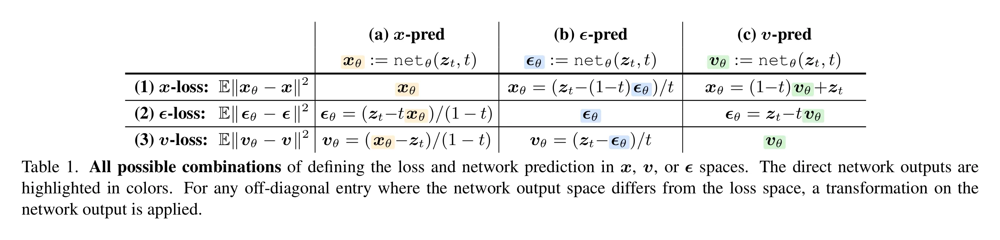
先看列：选择 x、ε 或速度中的哪一个作为网络直接输出。再看行：选择图像、噪声或速度误差作为损失。比如，x-prediction 列与速度损失行交叉的那一格，就是上面推导的 JiT 方案。
这张表要提醒我们：说“采用 x-prediction”还没有完整描述训练方法，仍须说明在哪个空间计算误差。同样，采用速度损失，也不能据此断言网络一定直接输出速度。比较实验时，既要看输出参数化，也要看损失和时间权重。
相同速度损失，也可能是不同的学习问题
上面讨论的是损失的变化。不过，JiT 的螺旋实验统一使用速度损失，不同直接输出仍有明显差异。梁彤彤的知乎、博客和论文追问的正是这一层：即使误差比较的是同一个量，网络需要承担的计算也可以不同。#Liang-Zhihu#Liang-Blog#Liang-et-al.-2026
对比两种速度预测器：
两者都可以用 \(\mathbb E\|\hat u-u\|^2\) 训练。但第二种计算图把输入项明确分开了：
这里的 long skip，就是从带噪输入直接到最终输出的一条长跳连。它绕过主干，把主干给出的图像估计和原始输入在末端组合。相比之下，没有这条外部输入通路的直接速度网络，需要让内部状态一直保留最终速度输出所需的输入变化。
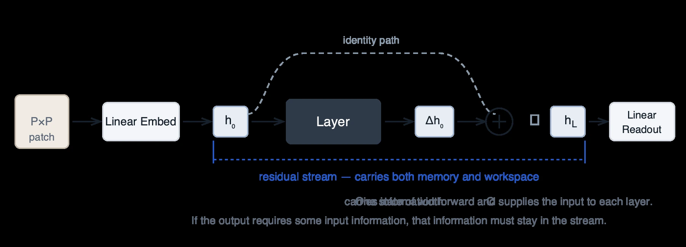
图中沿深度传递的隐藏状态，就是 residual stream，残差流。对简化的残差层，可以写成
它既是“存储”，也是后续层的“工作材料”。当最终目标要求保留大量噪声相关变化时，后续层也必须在携带这些变化的状态上继续计算。作者把这种由最终输出要求施加给持续状态的信息保存负担，称为 residual-stream burden。#Liang-et-al.-2026
因此，图像输出加解析跳连的意义，并不只是把同一个公式换个写法。它改变了信息经过网络的路线：主干可以集中估计干净结构，速度中的输入相关项另走一条已知通路。这里减轻的是主干的保存责任，不是让整个生成器不再依赖噪声。
需要区分两类“等价”：如果只对同一组参数、同一计算图的损失做精确代数化简，函数值和参数梯度都不会凭空改变；但把“主干加解析跳连”换成“另一个同宽主干直接输出速度”，已经改变了参数化和结构，不能据变量可换算就断言二者的表达与优化同样容易。
一条可学习旁路提供了什么证据
梁彤彤还做了一个有启发性的实验：保留速度损失，给普通 JiT-B/16 增加一条从输入到输出的可学习旁路：
其中两个时间系数由小网络产生，初始化为 \(\alpha=0\)、\(\beta=1\)。也就是说，模型起初没有利用输入旁路，但训练允许它学出分工。#Liang-et-al.-2026
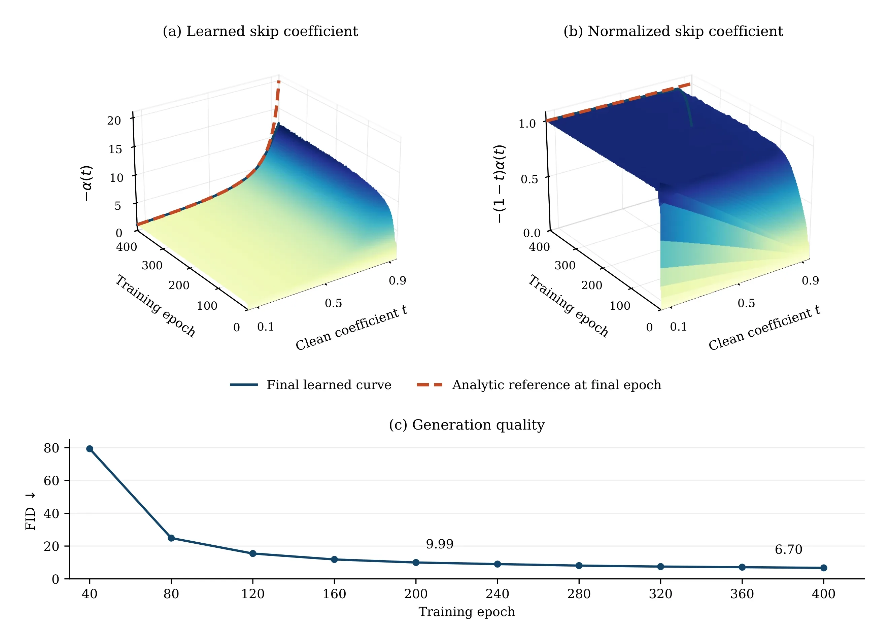
左上图画的是 \(-\alpha(t)\)，解析参考为 \(1/(1-t)\)。右上图画的是 \(-(1-t)\alpha(t)\)：当它接近 1 时，意味着输入系数接近我们刚推导出的 \(-1/(1-t)\)。论文观察到，这种接近在较低和中间时间区域很早出现，随后扩展到大部分测量时间网格。
在作者同一训练配置下，加入这条旁路的模型训练 200 个 epoch 后达到 FID 9.99，而普通直接速度主干为 139.83；继续训练到 400 个 epoch 达到 6.70。这里的 200 与 400 个 epoch 是不同训练预算，不能混成同一预算的对比。该实验使用 50,000 个生成样本、EMA 权重和 Heun-50 评估。#Liang-et-al.-2026
这个结果支持“给输入相关变化提供独立通路，可以减轻主干负担”的解释。但系数靠近解析参考，并不证明主干在每一点都严格等于干净图像预测器，也不能据此断言所有架构都必须采用 x-prediction。
采样仍然沿速度场进行
无论主网络输出哪一种量，在这条路径下都可以将它转换成速度估计，并数值求解
从噪声端走向数据端。于是，JiT 中三个选择可以同时成立：直接预测图像、用速度损失训练、用速度场积分生成图像。
到这里，我们已经把两类变化分开：更换损失空间，改变误差权重；更换主干输出和旁路，改变主干的信息保存责任。下一章将借助低维结构和预测协方差的分析，进一步说明为何一些输入方向对干净估计不重要，却仍然需要出现在速度预测中。
第二章说明，预测干净图像以后，可以利用当前带噪输入直接算出速度。现在我们继续追问：为什么把这部分运算放在主网络外，会让学习更容易？我们需要先把“干净结构占据较少方向”这句话说具体。
有些输入方向只剩噪声
先考虑一个理想化例子。假设干净数据严格落在一个低维线性子空间中，令 \(P\in\mathbb R^{D\times d}\) 的列是这个子空间的一组正交基，满足 \(P^\top P=I\)。任何干净数据都能写成 \(x=Py\)。定义投向其余方向的投影矩阵
因为干净数据不包含这些方向的成分，所以 \(Qx=0\)。对带噪路径和速度分别应用这个投影，便得到
这个小例子很有用：在 \(Q\) 对应的方向上，干净预测的正确答案恒为零，速度预测的正确答案却随输入而变化。这里的速度成分甚至完全可以从当前输入计算出来，并不是不可预测的随机误差。
如果主网络只输出干净估计，就不需要为了输出而保留这些方向；网络外的 \(-z_t/(1-t)\) 项会自动补上速度所需的成分。直接输出速度、又没有独立输入通路的网络，则必须让这些输入变化经过自己的计算图到达输出。
这说明噪声相关信息为何会成为保存负担。它没有证明自然图像严格位于某个固定线性子空间，也没有证明所有速度网络都需要更多参数。它只是把两种输出的分工差异单独抽了出来；下一步再看真实 patch 是否存在近似的结构。
图像的低维性怎样衡量
梁彤彤的论文没有停在“自然图像位于低维流形”这个直觉上，而是测量了图像 patch 的协方差谱。#Liang-et-al.-2026
协方差描述数据围绕均值怎样变化。对它做特征分解，得到相互正交的主方向及对应方差 \(\lambda_i\)。如果少数方向已经解释了大部分方差，就称这种现象为谱集中。论文使用 \(r_{90}\)：按方差从大到小累加，解释 90% 总方差所需的最少方向数。
在作者测量的 ImageNet 256×256 图像中，一个 16×16 RGB patch 有 768 个坐标，但只需要 8 个主方向，就能解释干净 patch 的 90% 方差。保留这些方向后，图像的大致轮廓仍能辨认；增加方向数会逐渐补回纹理。
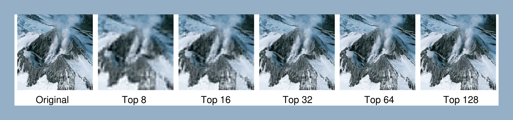
读图时要区分“轮廓仍然可辨”与“图像已经无损恢复”。少量方向保留的是高方差结构，并不意味着剩余细节没有意义，也不意味着图像的数学内禀维数就是 8。PCA 测量的是线性方差的集中程度，不是流形维数。
论文同时测得，速度标签需要 668 个方向才能解释 90% 方差。这个差异提供了线索，但还不是完整解释：因为上一章已经说明，模型在平方损失下学习的是条件均值，未必需要逐样本重现标签里的所有变化。因此，我们还需要检查可预测的部分是否也存在差异。
从最佳线性预测看差异
我们沿着论文附录的最佳仿射预测分析，把计算拆开。固定时间，设一个已减去均值的干净 patch 为 \(p\)，其协方差为 \(\Sigma_p\)；独立噪声为 \(n\sim\mathcal N(0,I)\)。记
这里的 \(\sigma\) 只是本章线性路径的噪声系数。我们先把预测器限制在线性形式 \(\hat p=A_xp_t\)、\(\hat u_p=A_up_t\)，以便得到可以检查的解析结果。数据已中心化，所以最佳仿射预测的常数项为零。
对任意目标 \(Y\)，最小化 \(\mathbb E\|Ap_t-Y\|^2\)，令对矩阵 \(A\) 的导数为零，得到正规方程：
由于干净数据与噪声独立，且噪声协方差为单位矩阵，
最后一行中的负号，来自速度中的 \(-n\) 与输入中的 \(\sigma n\) 的相关性。因此，最佳线性预测器为
不必直接理解整个矩阵。换到干净 patch 的主方向坐标系后，每个方向都可以单独看。如果第 \(i\) 个方向的干净方差是 \(\lambda_i\)，两个预测器在这个方向的系数分别为
固定 \(t<1\)，让干净信号很弱，即 \(\lambda_i\to0\)，便有
这正好重现了开头的理想子空间例子：干净估计可以忽略这个方向；速度估计仍要保留它，并给出由带噪输入决定的响应。 这个响应不是去猜输入之外的一份未知噪声，而是在处理输入中已经存在的噪声变化。#Liang-et-al.-2026
可预测部分也可能分散在很多方向
还可以继续计算预测输出的方差。第 \(i\) 个输入方向的方差为 \(t^2\lambda_i+\sigma^2\)，乘上对应预测系数的平方，得到
当 \(\lambda_i\to0\) 时，二者分别趋向 0 和 1。也就是说，许多对干净预测几乎没有贡献的方向，仍能对速度预测贡献显著变化。
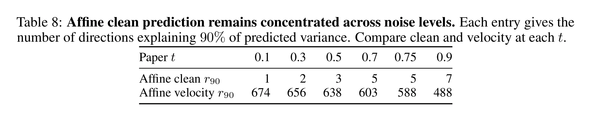
例如，在 \(t=0.5\) 时，表中最佳仿射干净预测只需 3 个方向解释 90% 方差，速度预测则需 638 个。论文在各时间分别对推导出的谱排序后计算这些数字。
这里要守住分析边界：最佳仿射预测只在仿射函数类中最优；除非另加相应分布假设，它不等于任意非线性条件均值预测器。这个计算解释了弱干净方向为何仍会形成可预测的速度负担，不是对所有 Transformer 容量的下界证明。
从输出差异回到网络瓶颈
把上述观察放回普通 DiT：每个 patch 先被编码进有限宽度的隐藏状态，再经过多层计算，最后读出预测。如果最终要直接输出速度，这条状态通路就需要保留足够的输入变化；如果最终只需输出干净估计，主干便有机会过滤掉更多噪声主导的方向，所需的输入项由解析旁路提供。
这也解释了为什么大 patch 值得特别关注：一个 token 汇集的像素坐标增加后，它需要承载的噪声变化也会增加。隐藏宽度和通路若不相应调整，保存这些变化与学习可利用结构就可能争用同一份状态空间。具体有多难，仍取决于架构、训练配置和数据，并不能只凭 patch 的坐标数决定。
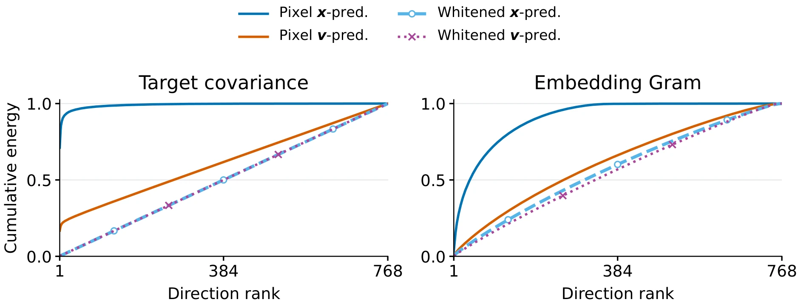
这张图把数据与网络联系起来：干净像素目标较集中，x-prediction 学出的输入嵌入谱也更集中；但两条曲线衡量的是不同对象，不能把对应序号当成同一个方向，更不能仅凭累计曲线就断言嵌入已与数据主方向对齐。方向对齐需要后文单独讨论的测量。
为什么流形假设还不够
一个重要的反例是白化。作者对干净 patch 做可逆线性变换，使其协方差谱变平。可逆线性变换保留流形的内禀维数，却改变了方差分布和模型面对的数值几何。#Liang-et-al.-2026
在作者配置下，白化空间中的 x-prediction 生成结果映回像素空间评估后，FID 从原像素空间的 10.19 恶化到 132.95。这说明“仍然位于同样维数的流形上”本身，不足以保证原来的学习优势。这里的反例支持关注谱集中，但也不能把所有优化因素都归结为一个 PCA 数字。
因此，回答“为什么可换算却不好学”，需要同时看三件事：预测函数需要保留哪些变化，网络提供哪些信息通路，以及数据结构是否容易被这些通路利用。 x-prediction 的价值，是让主干有机会把更多能力用于干净结构，而把已知的输入依赖交给解析换算；它不是所有任务中都更优的保证。
下一章回到 JiT，具体看这套分工如何落实为像素空间 Transformer、训练步骤和多步生成算法。关于残差流内部表征、独立通路和带宽干预的实测证据，后面的专章还会继续展开。
前面三章已经说明，直接预测干净图像既能构成合法的速度预测器，也可能减轻主网络保存噪声相关信息的负担。现在回到 JiT：这个思想怎样落到一个可以训练和生成图像的模型里？
图像怎样进入 Transformer
JiT 的全称是 Just image Transformers。它直接处理像素图像：把图像切成不重叠的 patch，经线性投影和位置编码得到 token 序列，通过 Transformer 主干，最后将每个输出 token 线性投影回像素 patch，再拼回图像。网络输出与输入图像具有相同形状，但其含义是干净图像估计。#Li-He-2025-JiT
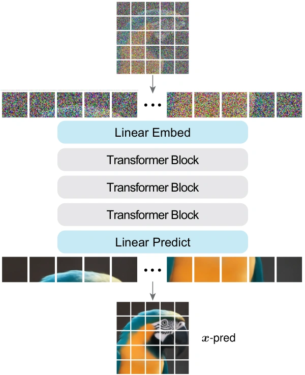
以 256×256 RGB 图像、patch size 为 16 为例，token 数量为
每个输入 patch 包含 768 个像素数值。JiT-B 的隐藏宽度也是 768，但两个 768 含义不同：前者是原始 patch 的坐标数，后者是每个隐藏 token 的通道数。
时间和类别也要输入网络。原文基线沿用 DiT 的 adaLN-Zero 条件注入，用条件控制层内归一化与残差更新；后续增强配置还加入类别 token。直接预测图像不等于无条件生成，也不等于舍弃时间条件。
一步训练怎样进行
训练时并不先生成一整条从噪声到图像的轨迹。一次训练步骤只需要真实图像、随机时间和随机噪声，在选中的时刻构造输入。#Li-He-2025-JiT
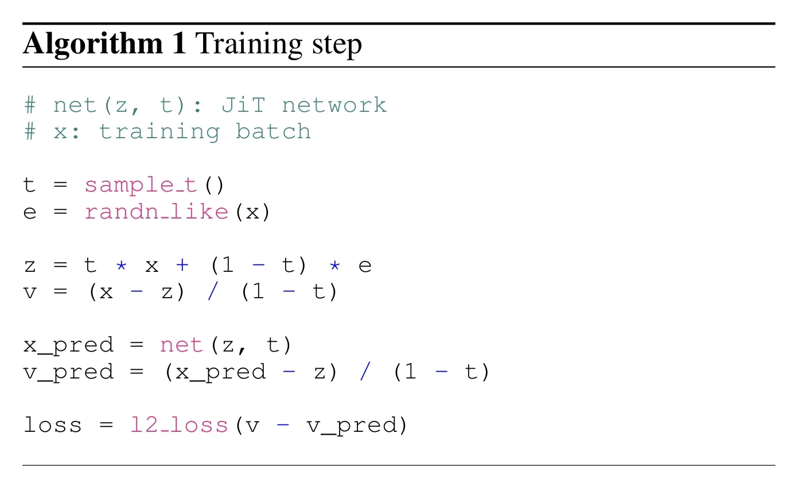
按图中顺序读取：
- 从数据集取出干净图像 \(x\)，采样时间 \(t\) 和高斯噪声 \(\epsilon\)。
- 构造 \(z_t=t x+(1-t)\epsilon\)，以及已知标签 \(u=(x-z_t)/(1-t)\)。
- 主网络接收 \(z_t,t\) 及条件，输出 \(\hat x\)。
- 在网络外计算 \(\hat u=(\hat x-z_t)/(1-t)\)，比较预测速度与标签，反向传播更新网络参数。
因此，模型不需要一个现成的“正确速度场”提供监督；每个样本对都能提供条件速度标签，多样本训练则让网络学习当前状态对应的条件均值。
时间也不一定均匀采样。原论文采用 logit-normal 分布：
ImageNet 256×256 的默认值为 \(\mu=-0.8\)、\(\sigma_s=0.8\)。这里的 \(\sigma_s\) 是时间采样分布的标准差，不是路径中的噪声系数。采样时间的分布，与第二章的损失权重一起决定训练对各噪声水平的关注。
伪代码省略了类别条件、CFG 和分母截断。原文说明，计算相关除法时将 \(1-t\) 的分母下限设为 0.05；其作用和理想公式的区别已在第二章说明。不能把简化伪代码当成包含全部默认配置的完整实现。
预测了图像，为何还要多步生成
推理从噪声状态开始，此时没有真实图像可供构造标签。每一步先估计干净图像，再把这个估计换成当前位置的速度，通过 ODE 求解器走到下一个时间点。#Li-He-2025-JiT
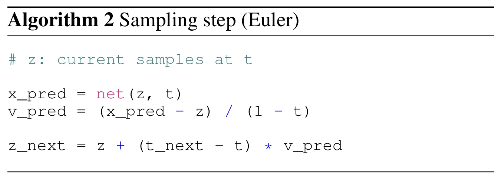
令 \(t_{i+1}>t_i\)、\(\Delta t_i=t_{i+1}-t_i\)，理想公式下的一步 Euler 为
把后两行合并，可以更直观地看到这一步在做什么：
它朝着当前预测的干净图像移动一段。下一步到了新位置，网络会重新给出估计，并不要求后续各步一直朝着同一个固定终点前进。前面的时间步越接近噪声端，单次干净估计通常越不确定，因此不能仅因输出是一张图像，就把它直接视为最终生成结果。
这个更新也没有执行“预测干净图像后，再抽一份新噪声重新加回去”。它利用当前输入和干净估计得到速度，做确定性的数值积分；在固定模型、条件和求解设置后，随机性来自初始噪声。条件引导会改变使用的速度场，但不要求每一步重新注入随机噪声。
原论文 Algorithm 2 为便于展示采用 Euler；默认评估使用 50 步 Heun。Heun 通常先做 Euler 预测，再在预测位置评估一次速度，对两次斜率作平均校正。采样步数不等于网络评估次数；端点求值还需要数值保护，不能在未说明实现处理的情况下把含 \(1/(1-t)\) 的公式直接代入 \(t=1\)。
九种组合的实验怎样读
第二章的 Table 1 给出合法公式；Table 2 才是它们实际训练后的对照。原文在每种设置中训练 200 个 epoch，使用 CFG，并以 50,000 个生成样本计算 FID，数值越低越好。#Li-He-2025-JiT
FID（Fréchet Inception Distance）衡量生成样本与真实样本在特征空间中的分布距离，数值越低越好；它不能单独衡量全部视觉质量。CFG（classifier-free guidance，无分类器引导）通过组合有条件与无条件预测来调节生成对条件的遵循程度。不同引导强度下的分数应使用一致的口径比较。
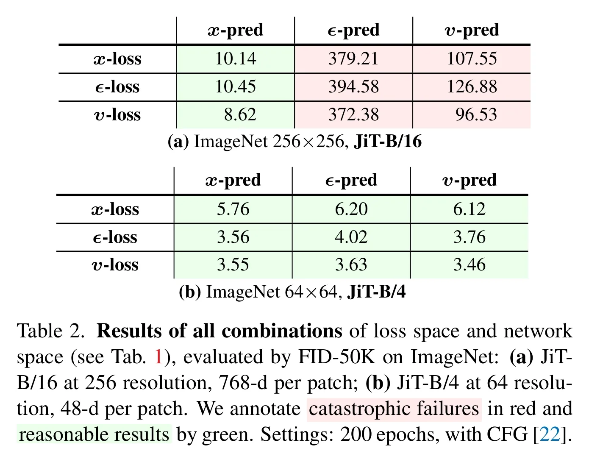
先固定上表的一行，比如速度损失行，比较三列直接输出：x-prediction 的 FID 为 8.62，噪声输出为 372.38，速度输出为 96.53。损失空间相同，结果仍然相差很大，说明不能只用时间权重解释这个设置中的成败。
再固定 x-prediction 这一列，比较三行损失：FID 分别为 10.14、10.45、8.62。损失仍有影响，但三者都能生成合理结果。因此，论文并没有说损失选择不重要，而是指出在这个大 patch 基线中，它不是唯一决定性因素。
下表的 patch 为 4×4×3=48 维，隐藏宽度仍为 768，几种直接输出都能工作。在速度损失下，三个 FID 为 3.55、3.63、3.46，x-prediction 并不是数值最好的一个。两表同时改变了分辨率与 patch 设置，不能把数字拼成单纯扩大 patch 的因果曲线；但它们清楚限制了“x-prediction 总是最好”的说法。
容量不是越大越好这么简单
如果信息保存空间不足，一个自然办法是加宽网络。JiT 还检验了相反的方向：对 x-prediction 的输入嵌入引入低秩瓶颈，先把 768 维 patch 线性压到更小的维数，再线性映射回主干宽度。#Li-He-2025-JiT
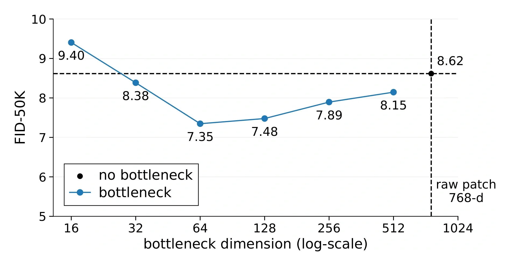
图中瓶颈小到 16 维时仍能工作；在作者设置下，32–512 维范围的多种瓶颈还改善了质量。这不是证明干净图像精确只有 16 维，也不是说越压缩越好。它说明这个直接图像输出的模型，可以容许输入通路丢掉部分变化，而不必把所有像素方向原样传到主干。
这里可以把 JiT 的核心直觉说得更具体：预测干净图像时，输出虽然仍有全部像素坐标，但需要描述的有效变化可能远少于坐标数。 如果干净数据集中在低维流形附近，模型学习的是如何从带噪输入估计这种干净结构，不必为了最终直接输出而保留所有独立噪声方向。这使得较窄的信息通路仍可能够用。
原文的二维玩具实验把这一点做得尤其清楚。作者用固定、模型未知的列正交矩阵 \(P\in\mathbb R^{D\times2}\)，将二维数据映射到 \(D\) 维空间：
在 \(D=512\) 时，输出仍有 512 个坐标，但干净标签都在同一个二维线性子空间中。宽度为 256 的 MLP 无法通过中间状态连续、无损地传递任意 512 维输入，却仍可能提取恢复干净结构所需的信息。相反，加入的高斯噪声在全部 512 个方向上变化，直接预测噪声或速度需要处理更广泛的输入变化。实验中 x-prediction 仍能生成合理样本，另外两种直接输出则失败。#Li-He-2025-JiT
这就是“干净预测的目标维度更低”的准确含义：有效自由度较少，输出张量的坐标数没有减少。 在这个玩具构造中，干净目标的条件均值也仍在 \(P\) 的列空间中；对一般弯曲的自然图像流形，条件均值却未必恰好落在流形上。因此，自然图像实验支持模型利用低维结构的解释，不能直接说网络已经精确重建了一个低维流形。
输入瓶颈实验与玩具实验相互呼应，但它压缩的是每个 patch 的输入嵌入，不是将整个 Transformer 的所有隐藏状态都降到 16 维。压缩后的信息还会在主干中结合其他 patch 与条件进行处理。它说明主干不必原样承载全部带噪像素变化，并不证明任意压缩都能保留生成所需的信息。
论文又逐步加入 RoPE、qk-norm 和 in-context 类别 token 等通用组件，并单独报告了结果。应区分用于分析预测目标的基线，与加入这些组件后的增强模型，不能把不同配置的 FID 混为一谈。
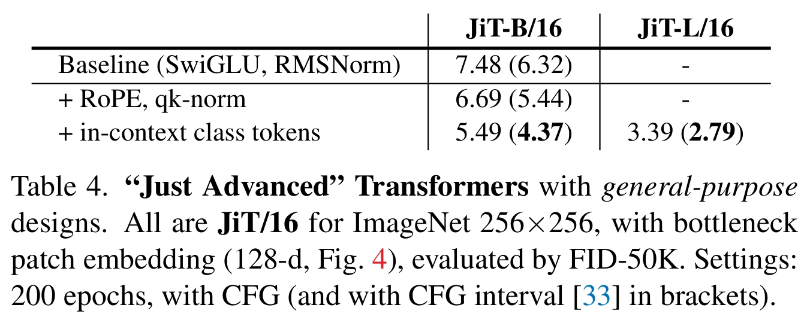
对更高分辨率，论文使用更大 patch 保持主要序列长度，同时调整噪声尺度：512 分辨率采用两倍噪声标准差，1024 分辨率采用四倍。因此，不能将这些结果描述为只改分辨率、其余配置完全相同。
周弈帆的博客进一步从复现角度讨论 patch size、预测目标和损失的关系，可帮助理解实现选择。不过其 FFHQ、小模型和 FID 样本数等设置，与原论文 ImageNet 实验不同，不能直接比较分数。#Zhou-JiT
到这里，JiT 的机制已经落到了具体流程：主干预测干净图像，经解析式转换成速度，用速度误差训练，并沿速度场多步采样。接下来的问题是：如果不改变直接速度输出，能不能通过架构分工解决类似的信息保存负担？下一章将围绕这个问题比较其他像素模型。
JiT 说明，直接预测干净图像可以让普通像素 DiT 更容易训练。但这不等于速度预测本身有问题。第二章中，给速度网络加一条输入旁路，就能显著改善结果。沿着这个思路，还可以问：能不能让主干负责结构，让另一个较轻的模块处理当前带噪像素？
DiP、DeCo 和 PixelDiT 都采用了全局与局部的分工，但具体结构不同。这里比较的是它们怎样安排信息通路，不是把三个方法当成在 JiT 上逐项叠加的改进。#Chen-et-al.-2025-DiP#Ma-et-al.-2025-DeCo#Yu-et-al.-2025-PixelDiT
从一个主干，变成两条信息通路
先用一组示意公式概括这类设计：
这里 \(B_\theta\) 是处理较短 patch 序列的语义主干，\(c\) 是它提供的特征，\(D_\phi\) 是直接访问当前带噪像素的模块，\(y\) 表示类别或文本条件。这组公式是本篇为比较所作的概括，不是三篇论文共享的原始公式，也不意味着它们所有实验采用完全相同的输出定义。
关键在第二个公式：像素模块除了主干特征，还拿到了原始带噪输入。这样，主干不必独自承担将每一份局部噪声变化传到最终输出的责任。它可以提供更集中的结构信息，像素模块再结合当前输入完成细粒度预测。
这与 x-prediction 的解析旁路有共同点：都给输入相关变化提供了主干之外的通路。但它们并不等同。JiT 使用已知系数作解析换算，像素解码器则需要学习如何组合局部输入与语义特征。
DiP：给每个 patch 一个局部细化头
DiP 的出发点是，大 patch 的 Transformer 擅长组织全局关系，却缺少处理 patch 内纹理、边缘和局部连续性的合适偏置。它先用主干提取全局特征，再让一个 Patch Detailer Head 处理各个像素块。#Chen-et-al.-2025-DiP
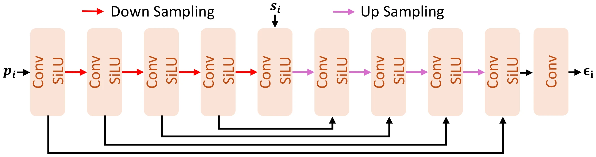
每个 patch 的细化头同时接收对应的全局特征和原始带噪 patch。论文最终选用浅层卷积 U-Net，在瓶颈处注入全局特征，各 patch 并行处理。卷积的局部连接、共享权重及多尺度结构，让它更容易处理局部纹理关系。
这里的“细化”发生在每次去噪网络评估内部。它不是先把整张图生成完，再独立运行一个后处理增强器。主干与局部头一起训练，共同承担当前时刻的预测任务。
论文还比较了细化头放在主干末端、中间和两处结合的方案，最终采用末端方案，兼顾效果与结构简洁。其模型实验使用 DDT 变体主干，而不是把一个未作其他改动的普通 DiT 直接拿来比较。
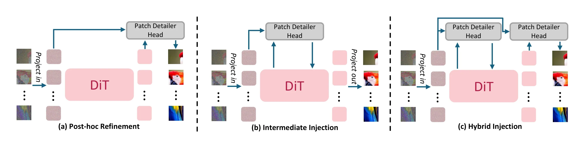
在 DiP 的同组局部头对照中，标准 MLP、patch 内注意力、坐标 MLP 和卷积 U-Net 分别得到 FID 6.92、2.98、2.20 和 2.16。这个结果支持该配置下局部结构设计的重要性，不能推成卷积在所有像素生成模型中都优于注意力。#Chen-et-al.-2025-DiP
关于预测目标还要分清来源：DiP 的局部头描述将输出称为噪声预测；梁彤彤的后续架构对照则在其自己的统一速度预测配置中实现并分析 DiP。这两组实验不能自动视为同一套训练协议。我们从原论文提取其结构分工，再用后续研究检验这种结构在速度预测下的作用。
DeCo：把语义与像素细节分工
DeCo 从频率角度描述类似的矛盾：DiT 主干既要组织低频结构，又要处理细密的高频信号，会降低学习效率。它将主干与像素解码器分开：主干处理 patch 级表示，像素解码器接收全分辨率带噪图像，并在主干特征的调制下输出像素速度。#Ma-et-al.-2025-DeCo
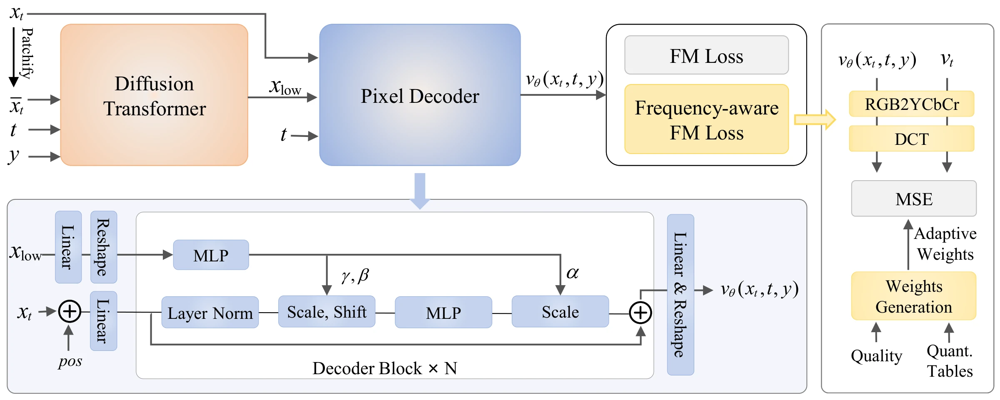
解码器避免在完整像素序列上做昂贵的自注意力，主要通过局部、逐像素的投影与 MLP，以及语义条件调制完成计算。AdaLN 调制可以理解为：根据时间和语义特征，调整像素状态的缩放、偏移与更新强度。没有自注意力不意味着整个解码器是单个线性函数；它仍有非线性激活与条件交互。
DeCo 还额外改变了损失。它将预测速度和目标速度转换到 YCbCr 色彩空间，再对 8×8 块作离散余弦变换（DCT），利用 JPEG 量化表的倒数构造频率权重。用本篇统一的速度方向表示，其频率损失可概括为
\(\mathcal T\) 表示色彩与频率变换，\(k\) 索引变换后的分量；这不是只按时间加权，而是在不同频率方向上重新分配误差权重。原文总目标还包含普通 FM 损失与 REPA 表征对齐损失。
所以不能把 DeCo 的全部收益都归于解码器。判断结构贡献，要看它自己的消融实验，而不能只与另一个模型的最终 FID 比较。
时间约定也要统一：DeCo 原文从干净端走向噪声端，速度写作噪声减图像；本篇时间方向相反。比较上面的公式时已相应翻转速度方向，不能把两篇里的同名时间直接代入。
PixelDiT：保留像素通路，压缩注意力序列
PixelDiT 同样使用 patch 级与像素级两条通路，但像素侧采用 Pixel Transformer（PiT）块。#Yu-et-al.-2025-PixelDiT
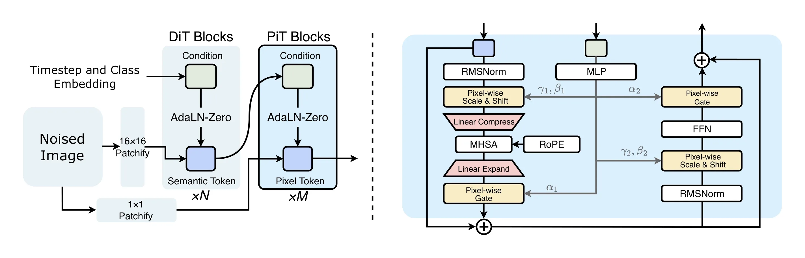
这里有两个值得分开的设计。
第一个是逐像素条件调制。主干的一个语义 token 对应整个 patch，但 patch 内不同像素并不需要同样的更新。PixelDiT 用可学习投影，从语义 token 生成该 patch 内各像素各自的调制参数，而不是把一套参数简单复制到所有像素上。
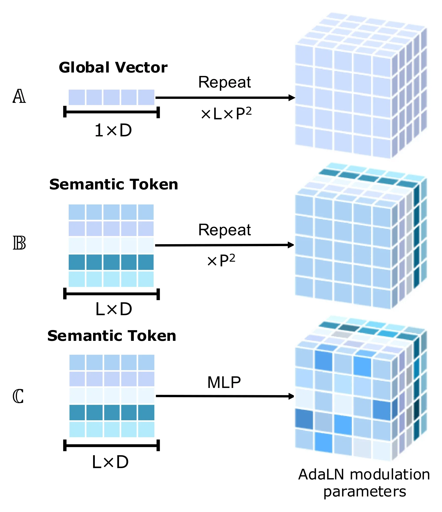
第二个是像素 token 压缩。直接让 H×W 个像素 token 做全局注意力，代价过高。PiT 在注意力分支里把每个 patch 的像素特征压成一个 token，完成全局交互后再展开；像素状态和残差通路仍负责保留细粒度信息。
当 patch size 为 16 时，注意力序列长度从 HW 减到 HW/256。这个 256 倍说的是序列长度缩减，不是整个模型的速度提升倍数，也不是将所有像素状态永久压缩并丢弃。
其消融中，加入 token 压缩后的模型在 80 个 epoch 达到 gFID 3.50，进一步加入逐像素 AdaLN 后为 2.36；训练到 320 个 epoch 后为 1.61。前两项可在同一训练预算下讨论设计变化，最后一项同时增加了训练时间，不能都当成结构的单独收益。模型还使用 REPA 对齐，因此它与 JiT 简洁基线的差异也不止输出参数化。#Yu-et-al.-2025-PixelDiT
它们与 x-prediction 的共同点
| 方法 | 主干之外如何接触带噪输入 | 像素侧如何完成预测 |
|---|---|---|
| JiT 的 x-prediction | 输入直接进入解析换算 | 将干净估计与当前输入组合成速度 |
| DiP | 局部头直接接收带噪 patch | 全局特征条件下的卷积 U-Net |
| DeCo | 解码器接收全分辨率带噪像素 | 无自注意力的像素模块，另有频率损失 |
| PixelDiT | 保留像素级输入与状态通路 | 逐像素调制与压缩注意力的 PiT 块 |
这张表比较信息通路，不把三篇同期论文排列成“先后升级”的关系，也不把空间低频与语义、空间高频与噪声当成严格一一对应的概念。结构、语义和频率之间的联系，要靠具体测量支持。
梁彤彤进一步在自己的统一实验中，用速度预测训练三个 B 规模的解耦模型，最终 FID 落在 6.33–13.31，而普通速度主干为 139.83。周弈帆的对比解读也提供了逐项观察解码器的阅读线索。#Zhou-PixelDiT 在 Liang 等人的实验中，语义端点的方差更加集中，中间表征也更容易被线性分类器读取。#Liang-et-al.-2026
这是后续研究中的同协议证据，不能把这些分数混进三篇原论文的大模型结果表。它支持本篇的判断：更换预测目标与改变网络通路，可能通过相近的信息分工减轻主干负担；直接速度预测并非注定失败。
但“负担减轻了”目前还只是一个需要具体观察量支撑的解释。下一章将回到 residual-stream burden，进一步说明怎样测量残差状态中的噪声变化、怎样把带宽与参数量分开，以及哪些反例会迫使我们修正“越低维越好”的说法。
前几章提出了一个解释：直接预测速度时，主干需要为最后的输出保存更多噪声相关信息；预测干净图像时，部分输入依赖可以交给解析旁路。但要把这个解释叫作 residual-stream burden（残差流负担），还需要回答三个问题：负担存在哪里，怎样观察它，以及改变承载方式以后结果是否改善。随后再回答：既然干净预测有效，为什么还研究速度预测？这是否与轨迹唯一有关？#Liang-et-al.-2026
残差流保存什么
普通残差网络的一次更新可以写成：
\(h_\ell\) 是沿网络深度传递的状态；注意力或 MLP 读取它，计算更新，再写回同一个状态。这里的“流”指网络内部状态的传递，与 Flow Matching 中随时间搬运概率分布的“流”是两个概念。
对一个 token，设状态有 \(C\) 个通道。普通 Transformer 中，这 \(C\) 个数既承担持续保存信息的任务，又作为每一层计算的输入。所谓负担，就是最终预测所要求保留的信息，也要在这条通路里被带到读出位置。
沿用本篇的时间记号，最优条件均值之间满足：
假设某个方向上的干净数据变化很小，\(x^*\) 在该方向上也变化不大。但 \(-z_t/(1-t)\) 仍会随噪声变化。直接输出速度的网络必须有办法将这种变化传到输出；输出干净图像的主干则可以把这一项交给外部解析运算。
这不意味着每层都必须原封不动保存整张噪声图，也不意味着所有速度网络都无法过滤噪声。网络可以编码、分路或重新组合信息；本章研究的是：在普通有限宽度主干中，这个额外要求是否影响了它学到的表示。
如何观察噪声负担
先从输入端看。设干净 patch 的第 \(i\) 个单位 PCA 方向为 \(e_i\)，输入嵌入矩阵为 \(W_{\mathrm{in}}\)，定义方向增益：
沿 \(e_i\) 给输入一个单位扰动，嵌入会产生多大的变化，正由这个量描述。它衡量输入通路对不同方向的敏感程度。研究者还检查嵌入矩阵与干净数据的主方向是否对齐，避免只凭一条排序后的谱曲线判断网络在过滤什么。
在论文的像素空间实验中，x-prediction 将总方向增益的 61.5% 分配给前 64 个干净 patch 主方向，末尾 64 个仅占 0.04%；直接速度预测对应为 10.0% 和 7.0%。这些是归一化的增益份额，不能读成“61.5% 的语义”或“滤掉了 99.96% 的噪声”。它们支持的判断是：两种目标学到了不同的输入方向选择。#Liang-et-al.-2026
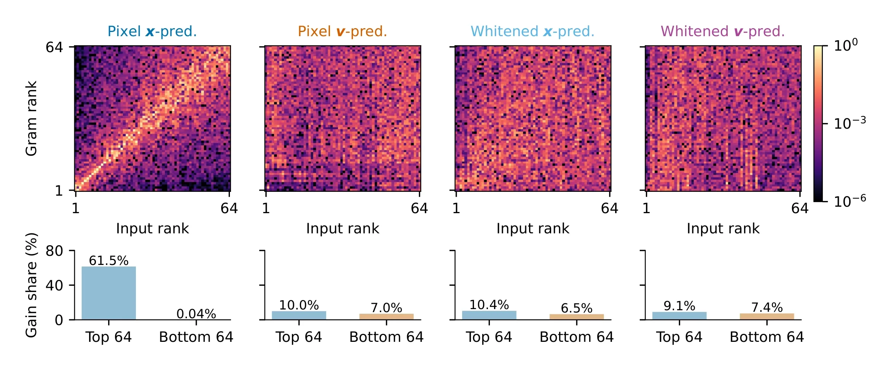
还可以直接观察中间状态。固定一张干净图像 \(x\) 和时间 \(t\)，反复更换加噪用的 \(\epsilon\)，记录同一层经归一化的表示 \(h(x,\epsilon;t)\)。先定义该图像的平均表示：
再把变化分成两类：
- \(W\)：同一张图像更换噪声，表示改变多少，即图像内部的噪声变化。
- \(B\)：对噪声取平均以后，不同图像之间的表示相差多少。
- \(B/W\)：图像间变化相对于噪声变化的大小。这里的“图像间变化”包含纹理等各种差异，不能直接叫作语义。
论文还用 \(S=W/D_h\) 报告每个表示坐标的平均噪声变化，\(D_h\) 是观测表示的总坐标数。比较时要固定时间、观测层和归一化方式，并让不同模型使用同一批图像与噪声。否则，单纯缩小激活尺度，也能让方差变小。
噪声变化小还不够。 一个恒定输出的网络同样有 \(W=0\)，却没有保存图像信息。因此还要测量图像间变化，并用线性探针检查类别信息：冻结生成模型，只训练一个简单的线性分类头，看中间表示能否被用来区分 ImageNet 类别。探针强，说明类别信息容易读出，不意味着研究者已经测量了全部语义。
论文在 \(t=0.5\) 时观察到，像素速度模型最后几个块的 MLP 输入出现噪声敏感度回升：第 10 块的 \(S\) 为 0.03948，第 12 块为 0.08516；x-prediction 对应从 0.04348 降至 0.01484。这是指定观测位置的实验结果，不能概括成“所有网络的噪声必然逐层增加”。#Liang-et-al.-2026
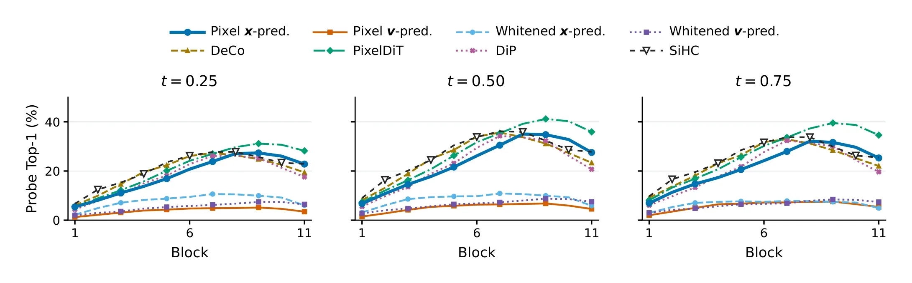
带宽不等于参数量
如果瓶颈与持续状态有关，那么增加状态的承载空间，应当尤其有利于需要保存噪声变化的目标。怎样检验，而不只是把整个模型变大？
Hyper-Connections（HC，超连接）把持续状态与计算工作区分开。普通残差块只有一个宽度为 \(C\) 的状态；HC 保存 \(S\) 个这样的状态：
每次计算先从多个状态读出一个宽度仍为 \(C\) 的向量，经过注意力或 MLP，再将更新写回多个状态：
这里 \(A_\ell\) 为 \(1\times S\) 的读取映射，\(B_\ell\) 为 \(S\times1\) 的写入映射，\(M_\ell\) 为 \(S\times S\) 的状态混合映射。持续状态有 \(SC\) 个坐标，但一次注意力或 MLP 的工作区仍宽 \(C\)。论文用 mHC 这一变体做对照，连接映射可随输入变化，状态混合还受到稳定传播约束。
因此，需要把几种“容量”分开：
| 量 | 描述什么 | 本实验中的处理 |
|---|---|---|
| patch 坐标数 | 每个输入块包含多少像素量 | RGB 的 16×16 patch 有 768 个坐标 |
| 残差流带宽 | 每个 token 持续保存多少状态坐标 | 从 C 扩到 SC |
| 工作区宽度 | 一次注意力或 MLP 处理的特征宽度 | 保持 C |
| 参数量与 GFLOPs | 可学习权重数与前向计算量 | 基本不变，并非严格零增加 |
更宽的持续状态仍然需要内存与数据搬运，不能把“参数和 GFLOPs 基本不变”理解为没有开销。
论文的 B 规模模型使用相同的 Heun-50、CFG 2.9 设置，结果如下：#Liang-et-al.-2026
| 数据空间与预测量 | 普通残差 FID↓ | 四状态 mHC FID↓ |
|---|---|---|
| 像素，干净图像 | 10.19 | 9.78 |
| 像素，速度 | 139.83 | 25.36 |
| DINOv2-B，干净特征 | 5.50 | 3.93 |
| DINOv2-B，速度 | 16.56 | 3.98 |
在深度、token 数与计算宽度不变的情况下，增加持续状态，对速度预测的帮助更大。这比“增大模型以后效果变好”更接近检验残差流带宽假设。不过 HC 同时改变了信息读写方式，实验仍不能把所有收益唯一归因于状态坐标数。
让每条状态负责局部区域
四个状态都接收同一个大 patch，信息该如何分配还要靠训练自行发现。论文进一步提出 Spatially Indexed Hyper-Connections（SiHC，按空间索引的超连接）：显式让不同状态负责不同子区域。
以 16×16 的 RGB patch 为例，分成四个 8×8 子块，每个状态的局部预测责任从 768 个像素坐标降到 192 个；分成十六个 4×4 子块，则降到 48 个。各状态只嵌入自己负责的带噪子块，最终输出各自的局部速度，再拼回完整 patch。
注意力和 MLP 仍然使用共享工作区，其 token 数不随局部状态数增加。对通道 \(c\)，SiHC 的读写可以写成：
这里的读写系数是学习得到的静态参数，不随当前输入重新计算；每个通道可以选择不同的状态组合。状态自身沿恒等通路保留，局部细节不必在每次参与共享计算时被混成同一份状态。
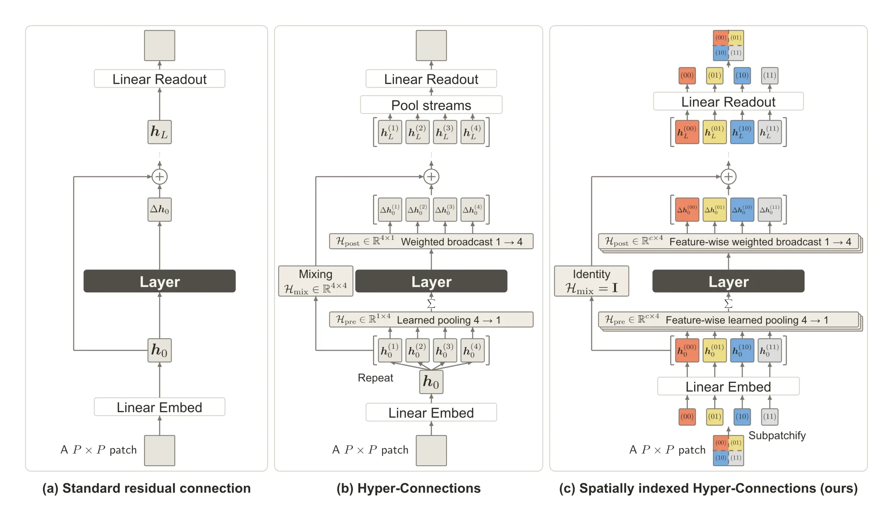
逐项改动的结果尤其有助于理解它在解决什么：#Liang-et-al.-2026
| 结构 | 状态数 | 每条状态负责的区域 | FID↓ |
|---|---|---|---|
| 普通 DiT | 1 | 16×16 | 139.83 |
| mHC，复制输入 | 4 | 16×16 | 25.36 |
| mHC，局部输入与预测 | 4 | 8×8 | 13.25 |
| 再用恒等保留与静态标量读写 | 4 | 8×8 | 11.50 |
| 再用逐通道读写，即 SiHC | 4 | 8×8 | 10.10 |
| SiHC，更细的局部状态 | 16 | 4×4 | 8.07 |
同样四条状态，给它们明确的局部责任就进一步改善结果；后来增加到十六条状态，还同时缩小了每条状态负责的区域。因此最后一步同时改变两个因素，不能解释为纯粹的状态数消融。
这组实验的意义是：直接速度预测可以通过改变内部信息组织恢复生成质量，并不一定要改成 x-prediction。 SiHC 的工作区也出现了更强的类别可读性，与前面的线性探针结果相互呼应。
静态映射与恒等保留还允许把部分读写运算合并，减少显式展开宽状态的次数。在论文十六状态 B 模型的实现对照中，峰值训练内存从 30.18 GiB 降到 19.82 GiB。这是同一结构的实现优化，不能据此声称扩宽状态比普通模型更省内存。
负担的内容同样重要
到这里很容易形成一个过强的结论：“目标的有效维数越高，模型就越难学。”DINO 实验检验的正是这个推论：困难主要来自要保存的方向很多，还是也取决于这些方向承载什么信息？
DINO 是预训练视觉编码器。研究者先把图像编码成 DINO 特征，再在这个特征空间中加噪并训练生成模型。因此，下面比较的是两种不同的数据表示，并非让像素模型增加一个分类任务：
| 比较项 | 像素空间 | DINO 特征空间 |
|---|---|---|
| 干净数据 | RGB 像素 | 编码器提取的视觉特征 |
| 一个被比较的数据单元 | 16×16×3，共 768 个坐标 | DINOv2-B token，共 768 个坐标 |
| 速度标签 | 干净像素减高斯噪声 | 干净特征减高斯噪声 |
| 速度目标解释 90% 方差所需方向数 | 668 | 651 |
两种速度目标的方差都分布在很多方向上。如果仅凭这个方向数就足以判断表征学习困难，那么两者应该表现得较为接近。 研究者接着冻结生成模型，用线性分类器检查中间表示中的类别信息，观察到的结果却明显不同。
论文中，干净 DINO 特征解释 90% 方差需要 563 个方向，速度目标需要 651 个；像素速度目标对应为 668。后两者的方差维数相近，但在 50% 输入噪声下，DINO 速度模型最后测量位置的线性探针准确率为 81.07%，像素速度模型只有 4.56%。DINO 输入本身在进入生成主干前就有 80.49% 的类别准确率。#Liang-et-al.-2026
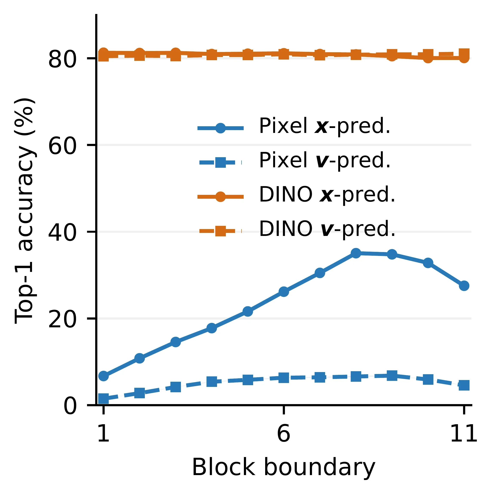
这组结果排除的是“高维目标必然导致类别信息难以保留”的简单推论。DINO 输入在进入生成主干前已经有很强的类别可读性，速度模型仍能维持这种可读性；像素速度主干却没有形成同等容易读出的类别表示。前面 mHC 的生成结果也显示，扩宽带宽后 DINO 空间的干净预测与速度预测 FID 分别为 3.93 和 3.98，差距很小。
一种与实验相容的解释是：DINO 中需要保留的部分高维变化本身就是后续层可利用的视觉特征；像素噪声的许多变化则主要服务于最终读出。因而，“搬运很多信息”对两者未必构成相同的负担。DINO 速度标签仍然含有高斯噪声，不能把其中所有方向都称作语义，也不能据此断言保存噪声有益。
这里没有证明生成模型从零学到了 DINO 的语义：预训练编码器已经提供了这些信息。两个空间的编码器与数据分布也不同，不能仅凭相同的 768 个坐标把它们视为严格等价的任务。实验支持的是信息的数量不足以单独解释结果；关于有用特征怎样帮助训练的具体机制，仍需进一步检验。
再结合第三章的白化实验：可逆白化保留了流形的内禀维数，却打散了原来集中的方差谱，使该实验中的 x-prediction 明显退化。两组证据共同提醒我们：既要问状态必须保存多少变化，也要问这些变化是什么，以及网络能否方便地利用它们。
因此，残差流负担是一个有实验支持的解释框架，还不是完整的训练动力学理论。论文没有证明“保存噪声”的梯度与“学习结构”的梯度在何处、以多大程度相互干扰，也没有给出所有任务所需带宽的通用公式。把这种干扰称作 friction（摩擦），应当理解为仍待刻画的机制假设。
为什么还研究速度预测
看到 FID 从 139.83 降到 8.07，可以先回答一个问题：既然 x-prediction 已经有效，为什么还要让模型直接预测速度？
这项实验首先是在检验解释。如果失败来自速度目标天然不可学，那么仅改变状态的保存与读写方式，不应当带来这样的改善。SiHC 保留速度目标，却恢复了良好的生成质量，说明普通像素主干的失败与信息承载方式密切相关。这支持残差流负担的解释，但还没有构成对所有训练机制的完整证明。#Liang-et-al.-2026
这里有两条可以选择的路线：
| 路线 | 主干负责什么 | 输入相关的噪声信息如何到达输出 |
|---|---|---|
| 预测干净图像 | 形成干净数据估计 | 通过解析旁路参与速度换算 |
| 直接预测速度 | 输出当前状态的运动方向 | 由网络内部状态或专门通路保存并组合 |
因此，x-prediction 不是让整个生成系统彻底丢弃噪声，而是允许主干减少为最终读出而保留的噪声变化；速度预测也不要求所有信息挤在同一条窄状态里。SiHC 是把后一条路线中的信息组织做得更明确。
直接速度预测还有实际上的理由：它直接提供采样 ODE 所需的向量场，不必先经 \((\hat x-z_t)/(1-t)\) 换算；这也避开了这一特定换算在 \(t\to1\) 时的除法，但不保证网络本身就没有端点误差或数值问题。在已有速度训练框架中，改进架构也提供了保留现有目标的一条路线。前面的 DINO 实验则说明，某些数据空间中保留较多信息可能有利于计算，不能预先认定干净预测总是更优。
这些是继续研究速度预测的理由，不是“必须选择速度”的证明。最终仍要结合架构、损失、数据空间和训练成本比较。尤其不能只把此处 SiHC 的 8.07 与别处不同配置的 x-prediction 分数直接排列成通用优劣结论。
噪声敏感不等于轨迹唯一
不同预测目标，对中间表示提出了不同的信息保存要求。要理解这种差别，可以做一个简单的比较：给同一张干净图像加入两份不同的噪声，观察干净目标与速度目标分别怎样变化。#Liang-Zhihu #Liang-et-al.-2026
固定 \(x\) 和时间 \(0<t<1\)，取不同噪声 \(\epsilon\) 与 \(\epsilon'\)：
两个训练样本的干净标签都是 \(x\)，速度标签却不同。因此，为了读出干净目标，网络可以压缩更多噪声相关差异；为了读出速度目标，网络需要保留能区分它们的信息。实际平方损失学习的是条件均值，所以这并不保证两个带噪输入一定得到完全相同的干净预测。
这不是说 x-prediction 的去噪轨迹不唯一，而速度预测的轨迹才唯一。 轨迹是把向量场沿时间积分得到的。即使网络只输出干净估计，仍然可以定义：
如果这个向量场满足局部 Lipschitz 等适当条件，给定初始状态，在解存在的时间区间内就有唯一的 ODE 解。端点若涉及奇异换算，还需单独处理。直接输出速度时，同样要满足相应的解存在与唯一性条件；仅仅把输出命名为“速度”，并不能保证这些条件。
还应区分另外两件事：
- 训练样本来源不唯一：同一个带噪状态可能由不同的干净图像与噪声组合产生，所以训练得到条件均值。
- 跨时间预测不自动一致：沿采样轨迹在不同时间预测的 \(\hat x_\theta(z_t,t)\)，普通干净预测训练并不保证它们始终相同。但普通速度匹配也不自动保证轨迹笔直，或每个时刻一步外推都到达同一终点；这些需要额外的约束或训练设计。
所以，不能用“x-prediction 不要求轨迹唯一”解释为什么保留速度预测。预测目标决定网络直接学什么；ODE 解的唯一性决定给定起点后的运动是否确定；沿轨迹的终点预测一致性又是另一个要求。把这三层分开，才能理解本文讨论的信息负担究竟发生在哪里。
本章得到的结论可以收束为：在大 patch、普通有限宽度像素主干等设置中，x-prediction 的优势与信息保存方式有关；解析旁路、独立像素通路、扩宽并组织持续状态，都可能改善这种分工。由此不能推出 x-prediction 对所有架构、数据空间和训练协议都必然最优。
从概率路径走到网络实现
回到开头的问题：既然 DDPM、Score Matching 与 Flow Matching 已经给出了可学习的目标和生成路径，为什么还要讨论 x-prediction？
因为给定一条概率路径，并没有替我们决定网络应该怎样实现它。在相同的线性路径上，干净图像、噪声和速度可以相互换算，但有限宽度、通过 patch 与残差连接计算的网络，未必同样容易学好这些函数。
本篇的关键公式是：
第一条规定数据与噪声如何组合，第二条允许网络先估计干净数据，再在网络外恢复采样所需的速度。这样的系统没有放弃速度场，也没有取消多步生成；它改变了主干与解析运算之间的信息分工。
四个选择要分开
| 选择 | 要回答的问题 | 本篇中的例子 |
|---|---|---|
| 网络输出 | 主干直接预测什么？ | 干净图像、噪声或路径速度 |
| 训练损失 | 在什么空间衡量误差，如何加权时间？ | 干净输出换成速度后计算 MSE |
| 信息通路 | 哪些状态负责保存和处理哪些信息？ | 解析旁路、像素解码器、SiHC 局部状态 |
| 采样方法 | 怎样沿学到的向量场更新当前状态？ | Euler 或 Heun 数值积分 |
改变其中一项，不代表其他项自动改变。例如，直接输出干净图像仍可以使用速度损失与 ODE 采样；直接输出速度也可以通过合适的架构学到良好的表示。比较方法时，应当先说明究竟改变了哪一项。
实验证据怎样连起来
JiT 首先揭示了一个明显现象：在普通大 patch 像素 Transformer 中，直接干净预测可以成功，而直接噪声或速度预测可能严重失败。二维数据嵌入高维空间的玩具实验，以及真实图像的输入瓶颈实验，都支持一个直觉：干净目标具有可利用的低维结构，所以主干可能无需保存全部带噪输入变化。 这里减少的是需要描述的有效变化，并非输出像素的坐标数。#Li-He-2025-JiT
Liang 等人的分析进一步把这个直觉落实到 patch 谱、输入方向增益、中间状态的噪声敏感度与类别线性探针上。x-prediction 允许将 \(-z_t/(1-t)\) 交给解析旁路，因而主干有更多自由去过滤与干净估计关系较弱的输入变化。这为普通速度主干为何承受更大信息保存压力，提供了可测量的解释。#Liang-et-al.-2026
架构实验又从另一个方向检验它。DiP、DeCo、PixelDiT 将全局处理与局部像素计算分工；HC 与 SiHC 则扩宽并组织持续状态。在 Liang 等人的指定实验中，直接速度预测的 FID 从普通主干的 139.83，经过多项状态组织改动降至 SiHC 的 8.07。它说明速度目标仍然可学，普通主干上的失败不能被解释成速度预测本身无效。
最后，白化与 DINO 限定了这套解释。白化保留流形内禀维数，却削弱了该设置下干净预测的优势；DINO 的速度目标同样高维，却能维持很强的类别可读性。因此，只说“干净数据在低维流形上”还不够：方差如何分布、信息是什么、网络如何承载它们，都影响学习结果。
仍然没有解决什么
第一，现有证据还没有给出一条普遍定律，告诉我们某个 patch 需要多宽的残差流。PCA 方向数、线性探针和噪声敏感度提供了不同侧面的观察量，却不能合并成一个适用于所有任务的容量公式。
第二，残差流负担尚未完整解释训练动力学。保存噪声相关变化与学习有用特征，究竟怎样通过梯度相互影响，仍有待分析。不能把实验关联写成已经证明的梯度冲突定理。
第三，预测目标的优劣依赖条件。大 patch 像素空间、小 patch、预训练特征空间、不同解码器与不同损失权重，可能给出不同排序。更强的类别线性探针也不自动等于所有生成指标都更好。
第四，x-prediction 不自动解决数值采样与一致性问题。将图像估计换成速度时，\(1-t\) 的分母会影响端点误差与实现；实际分母截断需要区别于理想公式。给定起点后的 ODE 轨迹是否唯一，取决于向量场的正则条件；沿轨迹各时刻的干净预测是否一致，则是另一项要求。两者都不能仅由预测目标的名称保证。
因此，本篇更实用的结论是：选择预测目标时，要同时检查网络内部保存了什么、损失如何分配学习压力，以及输出怎样进入采样公式。x-prediction 是一种有力的信息分工方式；直接速度预测与架构改进，则保留了另一条有效路线。
下一篇：EDM
下一篇将回到 EDM，从更统一的设计视角讨论噪声水平、网络预条件、损失加权、训练采样分布和数值求解器，梳理它们怎样共同影响生成质量。届时再把本系列中的不同预测参数化放到一起比较。
EDM 发表于 2022 年，JiT、Flow Matching 及本篇讨论的后续工作并非都由 EDM 原文覆盖。系列中的跨论文对照是基于各自原文所作的综合整理；EDM 本身的贡献与后来的扩展会分别说明。
参考来源
- Tianhong Li, Kaiming He. Back to Basics: Let Denoising Generative Models Denoise. 2025.
- Liang Tongtong. 何恺明团队指出，扩散模型应该直接预测「图像」而不是「噪声」，如何评价这个工作？ 知乎回答。
- Tongtong Liang et al. Residual-Stream Burden Shapes Representation Learning in Diffusion Transformers. 博客，Overview、The concept of residual-stream burden 及相关实验；访问于 2026-10-15。
- Tongtong Liang et al. Residual-Stream Burden Shapes Representation Learning in Diffusion Transformers. 2026.
- 周弈帆. 何恺明团队新作 JiT 解读与复现：解决大 patch DiT 难以训练的问题. 2025-12-03。
- Zhennan Chen et al. DiP: Taming Diffusion Models in Pixel Space.
- Zehong Ma et al. DeCo: Frequency-Decoupled Pixel Diffusion for End-to-End Image Generation.
- Yongsheng Yu et al. PixelDiT: Pixel Diffusion Transformers for Image Generation.
- 周弈帆. 给 JiT 加上像素级解码器：三篇近期 Pixel DiT 论文对比解读. 2025-12-06。用于比较思路，具体方法回查三篇原文；博客记录的早期结果与当前版本有差异。